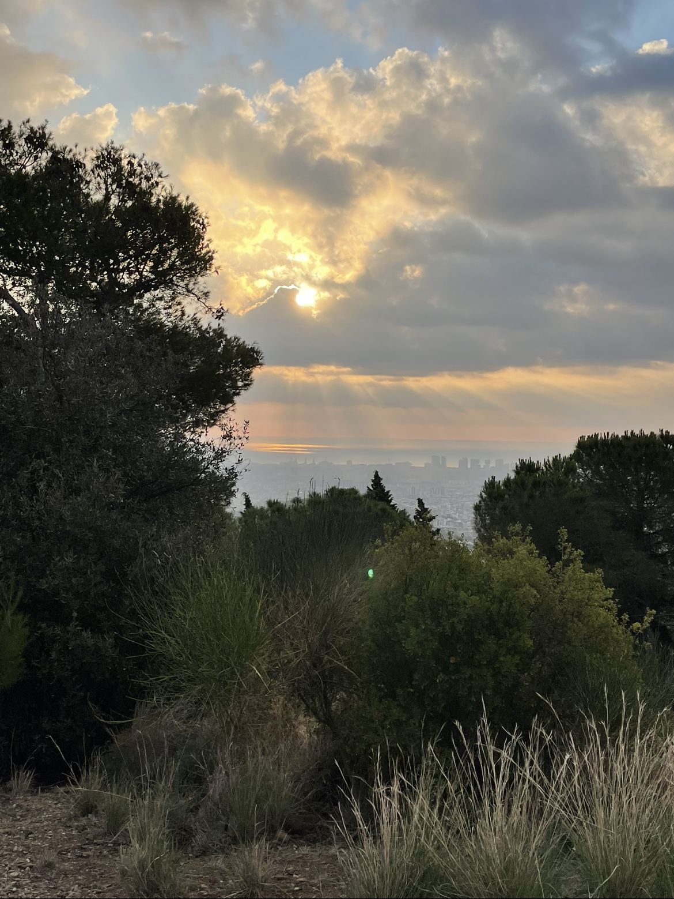
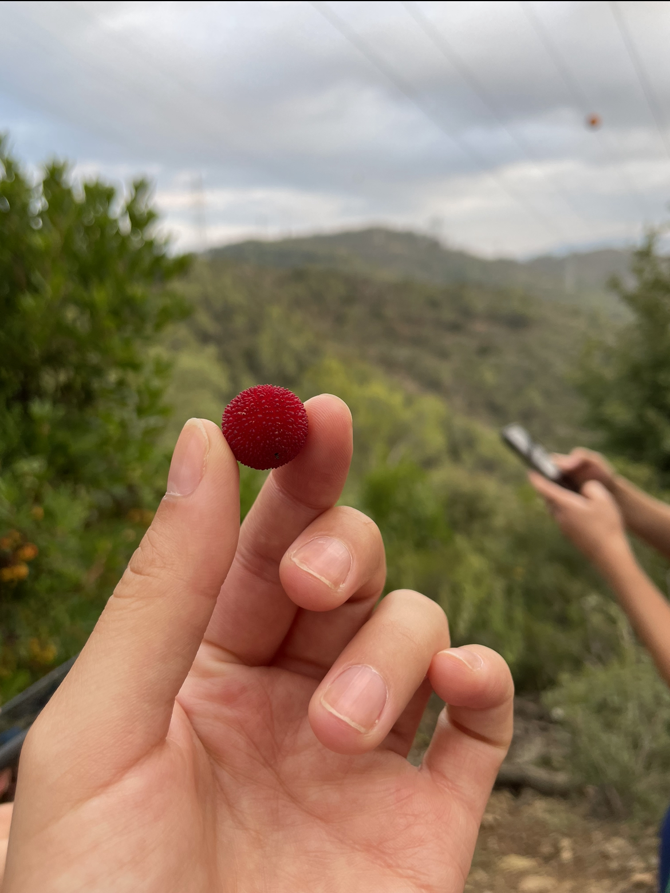
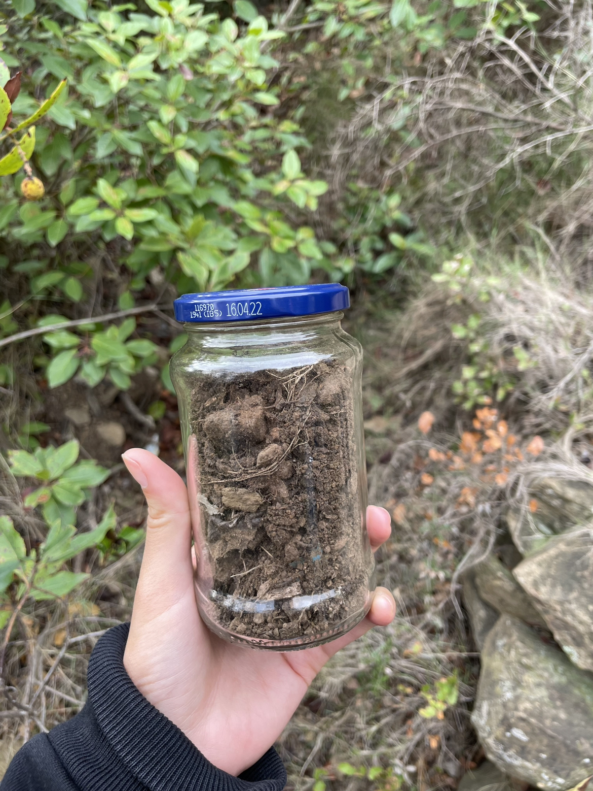
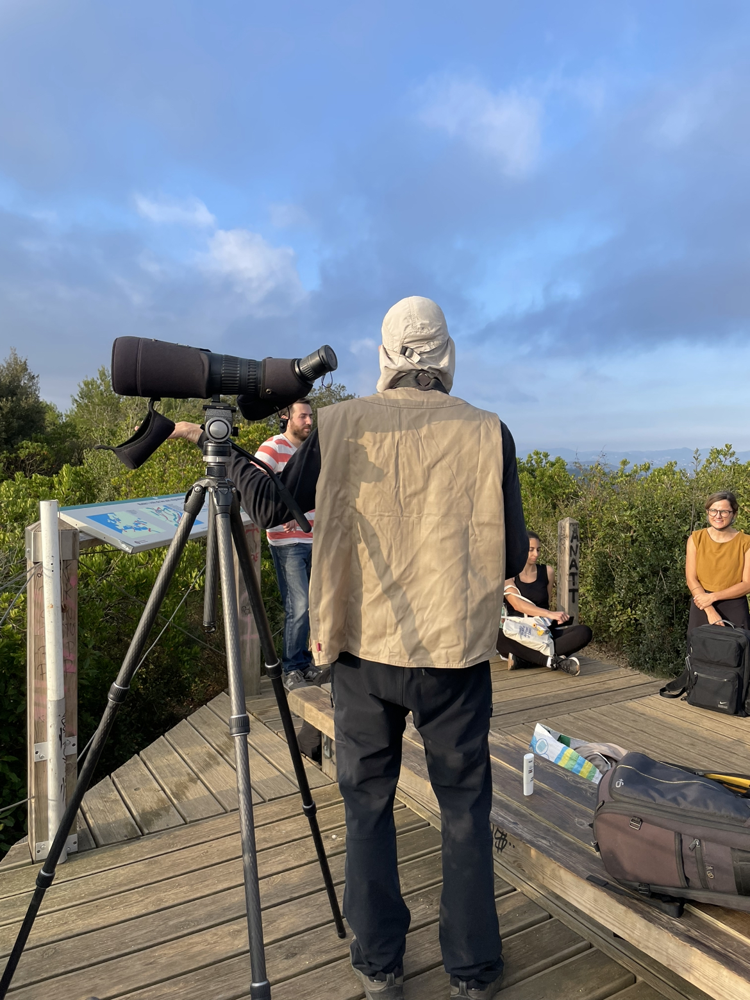
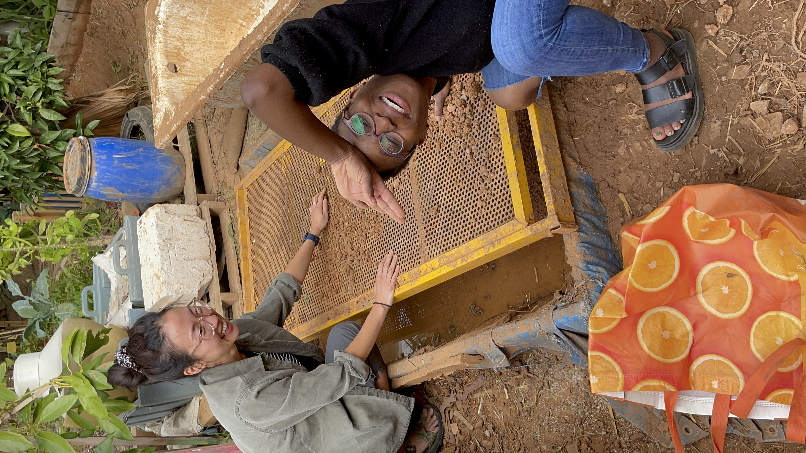
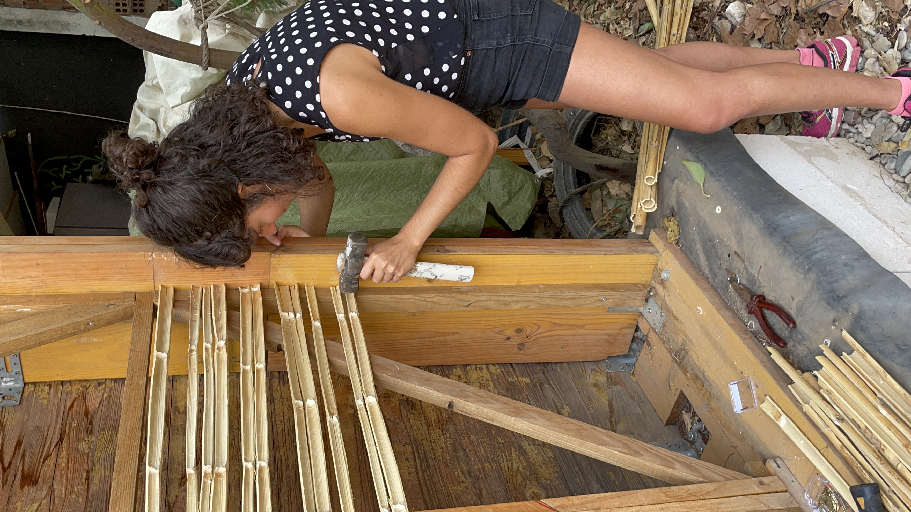

reflection 2.
Second week has been even more challenging than the first one. I think we're starting to get somewhere with our projects. I still feel like I have too many things in my head yet so little answers. We created a miró board which I found amazing. There are so many interesting topics I would love to dig into and add to my project, it was so hard just choosing one. I was in between Regenerative Tourism and Cyberbiomes. I think for now I'll go with regenerative tourism because in a way I'm very passionate about travelling but I'm also conscious of the environmental impact that creates. There is also few information regarding tourism and regeneration so I would like to dig deeper into this. But I also left some other topics on the side I would really like to touch at some point.


So we went to Colserolla Park and got to connect with nature and see Barcelona from a different perspective. I have to say that just standing on the top and seeing everything in such scale makes you realize, in case you had forgotten, about how small a part of the planet you are. In the same way we are all so much influential to our environment. It's incredible how nature regenerates and adapts so fast. That mountain used to be a vineyard before and now they've reforested it. There is also a conservation group dedicated to observing birds and analiziing their migration paths between other things like also educating people. We also found this Dog shelter which takes volunteers for walking some of their dogs. I gotta say I'm impressed with the sense of community in Barcelona.
   Now for the Weak Signals part, I still feel a bit lost with my topic. We did this excercise in which we have to analyze our topic at different scales, but I can't help but think nature is just better without us. #sadreactsonly. So yeah I'm still struggling to define how are we going to be able to repair the damage we've caused to our environment so far. I believe it has to do with education, change of habits, being respectful, conscious, dropping man's ego and more things. But at least I know there is something we can (must) do, that's why I'm here.
 Last Saturday we volunteered for Connecthort and had lots of fun using biomaterials to build a house. I guess this is also part of starting to change habits and ways of impacting the world we live in.
go back.